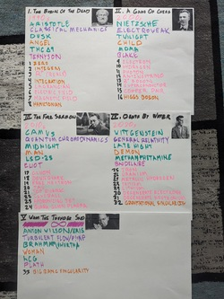

In my hubris, I consciously used James Joyce's Ulysses as a model, as it in turn used Homer's *Odyssey*. Originally, I had a schema mapping each chapter to a particle, and each part to a philosopher, a stage of human development, a poet, a physical theory, a stage of the evening, a drug, and a decade. The parts were named after the five parts of Eliot's The Waste Land. All of this went almost immediately out the window; if you know of a good way to thematically center a chapter around the τ (tau lepton), I'm all ears. My longest chapter, "a stamped-in network of paths", was an homage to (and justified by) the "Scylla and Charybdis" chapter of Ulysses (the title itself is a reference to Heart of Darkness).
I had originally planned for 33 chapters across five parts. It turned out being 29 chapters, plus an epilogue. The five parts were retained. They're taken directly from Robert Anton Wilson's Illuminatus! trilogy, where they're described as the five stages of the Illuminati's cyclic theory of history. These are themselves an extension from the three-part system of Joachim of Floris and the four-part system of Giambattista Vico; interested readers ought consult that fascinating book, especially its Appendix ג, "The Illuminati Theory of History".
The character of Harold Grimbisch is very loosely inspired by Timothy Scully, of whom I can't speak highly enough. It was my pleasure to correspond with Dr. Scully, and to benefit from his research and experience. Now in his seventies, Dr. Scully seems still to be in fine fettle, and I wish him the very best. I directly appropriated William Leonard Pickard, Jr., but think I portrayed him fairly based on Operation White Rabbit and The Rose of Paracelsus. His interactions with Grimbisch and the SYNCOPE cartel are entirely my invention.
Nowhere did I pull scientific punches. While I do not recommend midnight's simulacra as a primary source for science, there was none of this "we changed a few details" business as claimed by e.g. the writers of Breaking Bad, nor Tom Clancy in his Afterword to The Sum of All Fears. Outdoing Clancy's exposition regarding a thermonuclear detonation was absolutely a goal of mine, one I believe I achieved.